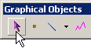
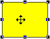
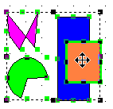
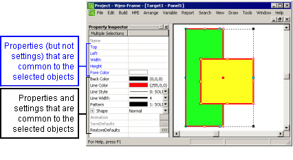

|
|
|
|
|
|
|
|
Click the Select icon on the graphical objects toolbar.

Select one or more graphical objects.
To select one object, click the object to display its selection box and eight handles—one handle at the top, bottom, both sides, and at each corner.

To select multiple objects, click a point on the panel and drag the Select tool to a diagonally opposite end point that forms a selection box around the objects. Each object will display the eight handles that mark its own selection box, but only one selection box will be represented around the perimeter of the objects as a group.


When more than one object is selected, the common attributes of the selected objects are displayed in the Property Inspector, and the text color of each property name depends on its commonality amongst the selected objects.
If a property's setting is not common to all selected objects, that property's name is displayed with blue text, and the setting field is blank.
If a property's setting is common to all selected objects, that property's name is displayed with black text, and the setting field displays the common setting.

Hover the Select tool over the selection box to display a crossed double arrow  , indicating that edits can now be made, using the Edit menu, toolbar icons, or right-click menu.
, indicating that edits can now be made, using the Edit menu, toolbar icons, or right-click menu.

To edit one or more objects with the right-click menu, the Select tool's crossed double arrow must be positioned over one of the objects within the selection box.
If the select tool is not positioned over one of the selected objects, but is still within the selection box, the right-click menu for the panel—not for the selection box—will display.
For details about the actual area of graphical objects, see Section 7.4.10, Actual Size of Graphical Objects.